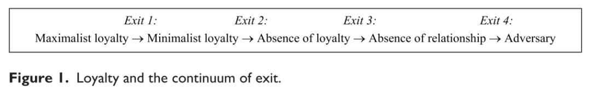
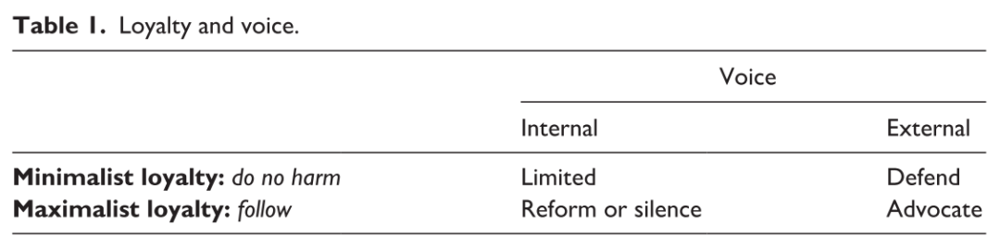
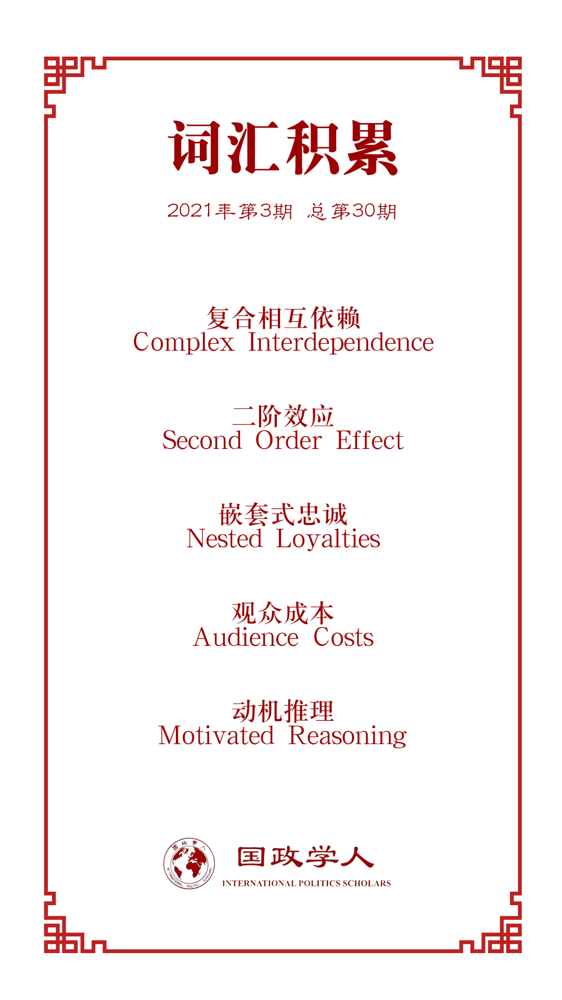

收录于合集 #理论研究 96个

作品简介
【作者】 Lauge N Skovgaard Poulsen，伦敦大学学院（University College London）国际政治经济学副教授和政治科学系研究生主任。获伦敦政治经济学院（LSE）国际关系博士学位。研究领域主要涉及经济外交，关注国外投资，冲突解决以及国际经济法。
https://www.ucl.ac.uk/global-governance/about/people/lauge-poulsen
【编译】 陈想（国政学人编译员，对外经济贸易大学国际关系学院）
【校对】 崔宇涵
【审核】 王川
【排版】 余姣
【美编 】方引弓
【来源】 Lauge N Skovgaard Poulsen.(2020). Loyalty in world politics. European Journal of International Relations，26 (4)，1156-1177.
【归档】 《国际关系前沿》2021年第3期，总第30期。
期刊简介
European Journal of International Relations ,《欧洲国际关系杂志》（EJIR）是欧洲政治研究联盟国际关系常设小组（the Standing Group on International Relations of the European Consortium for Political Research, SGIR）的同行评审旗舰期刊, 由SGIR和欧洲国际研究协会组成的联合委员会共同管理。根据Journal Citation Reports显示，2019年该期刊的影响因子为3.474。
世界政治中的忠诚
Loyalty in world politics
Lauge N Skovgaard Poulsen
文章导读
忠诚是困境中维持关系的粘合剂，能带来并维系合作。近期欧美民粹主义（populism）的兴起可能源于国家间由安全和经济危机所引发的自冷战以来最大规模的忠诚变更。这部分导致了大国对地区和全球体系的质疑，而落后国家则被迫审视自己对制度的忠诚度。国家究竟是有永恒的利益还是永久的忠诚呢？全球化、网络以及复合相互依赖（complex interdependence）的产生为激进组织、学术团体、恐怖主义组织和公司行为体之间建立跨国界的忠诚提供了更多的机会。这既促进又阻碍了国家获得并维系国内和国际的忠诚。对忠诚和权力关系的讨论将有助于明晰对理性的不同认知对世界政治中忠诚研究的影响。以伦理学对忠诚的美德的研究为基础，文章将忠诚定义为由情感联结所驱动的持续偏好行为，这一联结往往是由共有的社会身份以及主客体之间的互动所造就的。作者以不同于多数政治科学家的角度理解忠诚，并揭示其对世界政治研究的意义。
01
谁能对谁做到忠诚？
虽然像国家这样的行为体不可能像个人那样产生情感依恋。但是个人依恋可能会对其所属的集体行为产生二阶效应（second order effect）。在某些情况下，从个人到团体层面的忠诚可能是直接的，如领导人、外交官或将军的忠诚关系会对其国家在军事危机期间的行为产生重大影响。布什总统(以及最近的特朗普)与外国领导人的忠诚有着深厚的个人基础，这在“9·11”事件后变得尤为普遍(Daalder and Lindsay, 2003)。群体忠诚往往不是个人忠诚的简单加总:两者在性质和影响力上存在差异，因此，个人忠诚影响行为体的条件成为研究忠诚在国际关系中的具体体现时需回答的重要问题。行为体也可能展现所谓“战略忠诚”（strategic loyalty）。在这种情况下，外交官、国家领导人或其他行为体通过展现忠诚以实现自己的国际关系目标。这与“情感”外交（‘emotional’ diplomacy）类似(Hall, 2015; Hall and Ross, 2015)。对特定政策、制度设计、政策原则的忠诚通过关系发挥作用。也就是说，忠诚对象的选取源于其承载或展现出的理想或其他抽象的内容。显然，观念和原则塑造了相互关系中的忠诚，但忠诚的基本构件仍是相互关系中的主客体。
02
作为行为的忠诚
·偏爱（partiality）
忠诚通常不仅仅是一种二元关系（dyadic relationship）。偏爱是忠诚的内在和不可避免的方面。在忠诚重叠或分裂的情况下，这带来了特别的挑战。19世纪以来，天主教徒、穆斯林和犹太人在美国外交政策的辩论中时常因其“双重忠诚”（‘dual loyalties’）遭到谴责(Waldman, 2019)。在嵌套式忠诚（nested loyalties）的情况下，偏爱同样是内生的。在中世纪的欧洲，对封建领主、贵族和君主的忠诚是嵌套式的，但这时常与教会的忠诚产生冲突。
·持久性（persistence）
从行为的角度来说，忠诚包括持久性。酒肉朋友不是忠诚的行为体而是机会主义者。忠诚既不是仅仅基于直接或间接的互惠互利而偏袒，也不是还债的义务。这不是说忠诚不能被战略性地使用。事实上，在政治中，忠诚的对象往往是一个强有力的参与者，也就是说，这种关系往往——尽管不总是——是等级关系而非横向关系。此外，团结的纽带是基于某种共同的目的而形成的(Kleinig, 2014: 37–38)。
·忠诚的类型、退出和发声
此外需要辨析最小忠诚（minimalist loyalty）与最大忠诚（maximalist loyalty）(Fletcher, 1995)。一方选择不伤害另一方即可视为最小忠诚。最大忠诚要求一方必须积极促进对方利益，这通常依赖更深层的联系。最大忠诚是布什在9·11后的外交政策逻辑，例如主张其他国家“要么支持我们，要么反对我们”。
区分忠诚的两种类型，让我们对忠诚、退出和发声的关系有了更深入的理解。它呈现出四种退出方式，包括由最大忠诚到最小忠诚、由最小忠诚到忠诚缺失、由忠诚缺失到失去联系，以及由失去联系到敌对关系。至于忠诚和发声的关系，对最小忠诚的联盟而言，仅仅避免支持批评或损害乙国利益的联合国决议就足够了。而最大忠诚则通常包括通过话语表达支持——如果偏离方向——甚至改变所效忠的对象。最大忠诚同时可能导致关系中的沉默。极端的党派、意识形态或宗教信仰会导致“盲目”的忠诚。

图1
表1

需要注意的是，前面所谈到的仅是期望，而对忠诚行为的界定最终取决于行为体在特定背景下的认知。这对想要争取或展现忠诚的行为体而言，可能是个棘手的挑战(更不用说寻求其规律的实证研究了)。
03
**** 作为动机的忠诚
忠诚是一种原则性的信仰，被理解为“提供判断是非对错标准的规范性观点”(Goldstein and Keohane, 1993: 9)。在国家内部，不抛弃规范（non-abandonment norms）通常是由精英和能够从中获益的机构推动的。在国际关系中，似乎很难在各国间确立普遍的不抛弃规范。反过来，这意味着背叛的观众成本（audience costs）在世界政治中可能没有在(某些)国内政治舞台上那么明显。
在某些情况下，忠诚可能与实际的法律义务有关。例如，欧洲联盟(EU)成员国受欧盟法中忠诚原则的约束，以保护和加强欧盟合作的完整性(Klamert, 2014: 321)。然而，忠诚与义务并非是完全等同的。这是因为忠诚包含着内在的情感维度，而这对于规则驱动（rule-driven）的行为是不必要的(Shklar, 1993)。这不等于认为忠诚是非理性的。只要个人选择是可传递和一致的，理性选择理论就不会与行为体的情感抵触。
情感依恋通常植根于共同的社会身份(Brewer, 1999)。这使得身份认同对忠诚至关重要。身份认同与忠诚的密切关联主要基于以下两个原因。首先，群体归属感增加了帮助其他成员的倾向，即使这样做需要付出个人牺牲(Stern, 1995)。动机推理（motivated reasoning）则构成了第二点原因。套用赫希曼（Hirschman）的话，忠诚与信仰不同，但它确实包含一定程度的自我欺骗，也就是说，拒绝认识到对方正在衰败或存在缺陷(Hirschman, 1970: 93)。由忠诚和身份认同间的紧密联系推断出的三个结论尤其重要。首先，将忠诚植根于社会认同重申了忠诚关系固有的局部性。其次，忠诚与身份认同的联系使得忠诚与“背叛”的联系比与义务和承诺的联系更紧密。第三，也是相关联的，由于忠诚根植于行为体的身份认同，因而无法被强加。
忠诚不仅仅由行为体间因共同的社会身份所产生的联系来驱动的，而是因为两者处于一种特殊关系之中，通过持续联系和互动模式塑造了共同的历史(Scheffler, 2010: 115)。互动的重要性意味着，尽管忠诚可以是一种不期望互惠的单向关系，但如果一方的行为方式不能导致积极的情感依恋，忠诚将很难发展。除了激发情感依恋，互动还提供了关于其他行为体的信息，这反过来又是培养信任所必需的(Hardin, 2004)。但是当信任被打破时，忠诚也将消耗殆尽。例如，当美国国家安全局(National Security Agency)将目标对准其欧洲盟友的消息被披露后，即使跨大西洋亲密关系的坚定支持者对华盛顿的最大忠诚也开始动摇。互动的作用对国际忠诚有两个重要的影响。首先，忠诚可能既是国际制度所带来的影响，又是其驱动力。其次，精英之间更有可能产生国际忠诚，因为他们与自己管辖范围外的个体和组织互动更多。
04
**** 忠诚，权力与选择
忠诚既可以是纵向的也可以是横向的。在政治上，忠诚的对象可能往往比忠诚的主体更强大，但也可能处在较弱势的一方或是两者同等强大。权力与对忠诚的研究不无关系。首先，权力通过过去的合作发挥间接作用。例如，一个国家所具有的优越资源可以一定程度激励其他国家进行合作。其次，权力可以通过制度发挥作用。例如，通过规定行为角色、限制活动和塑造期望。第三，忠诚可以成为软实力的一种(Nye, 2004)，并对国际谈判产生物质性的影响。忠诚作为一种角色或仪式，根植于一种恰当性逻辑（logic of appropriateness），他与主体身份相互建构(see also Fletcher, 1995)。基于理性分析，一个不具备任何忠诚的行为体是不可想象的，因为所有原则、想法、利益和身份都植根于某种形式的已实现或未实现的忠诚，而这反过来又是权力的一种功能。从权力的结构和生产观点（productive views）来看，忠诚也不一定带有“选择”或算计的目的。
05
**** 例证:令人困惑的奴隶
与殖民军案例
本文以战争为案例作结，特别是探讨什么驱使人们在战争中冒生命危险。这些案例也有助于说明忠诚在不同的社会关系(横向与纵向)中的不同行为表现(最小忠诚与最大忠诚)，以及如何带来并影响国家与非国家行为体的权力。由奴隶来组建军队和担任公职被明确发展为一种制度，用以确保领导者免受内部和外部敌人的攻击，其基本前提是忠诚对权力和权力对忠诚的重要性。一个相关的例证是西方大国对殖民军的依赖。除了保护印度自身，英国在印度组建的殖民军在击败缅甸、尤其是西北边境上的日本帝国军队方面发挥了至关重要的作用，同时在击败意大利和德国在非洲和意大利的军队上也发挥了重要作用(Marston, 2014: 45)。英印殖民军的忠诚部分出于交易性的目的。军队是解决农村贫困人口失业和食品短缺的有效方案，尤其是其福利项目延伸到了军人家庭。殖民军的忠诚不仅来自物质利益，而且来自制度和话语的建构，这确立了殖民地士兵和军官的社会身份，与殖民军本身构成内在联系。
06
结论
本文将忠诚定义为持续的、由情感依恋驱动的局部行为，这种依恋主要由社会认同感驱动，但也存在忠诚的主体与客体之间的相互作用。对忠诚的研究面临两方面的挑战。首先，忠诚不仅出于机会主义支持（opportunistic support），同时也植根于情感依恋（affective attachment）。此外，本文对忠诚的理解，即忠诚的对象只能是行为体或机构，提出了对个人、群体或机构的情感依恋如何与对特定思想或原则的情感依恋相互作用的问题。因此，为理解忠诚对国际关系中的重要现象(如合作和制度)的作用，我们还需了解世界政治中行为体和思想间复杂的情感联系。其次，本文仍留下了一些未解决的问题，例如如何应用忠诚，如何衡量忠诚，如何依据经验确定忠诚区别于世界政治中其他因素的作用，以及忠诚如何与其他因素互动。
译者评述
当下中美之间结构性的矛盾势必导致中国面临来自美国及其盟友进一步的施压，虽然中国一贯秉持不结盟的原则立场，但了解结盟理论的实质和影响对我国顺势开展外交活动是必要的。拜登政府日前所发表的《过渡时期国家安全战略指南》，展现出美国政府重构民主国家联盟、重返国际组织的举措和决心。面对这一形势，回溯国际关系中的忠诚理论，有助我国对未来局势发展进行预判并制定相应的政策措施。
虽然当前国际关系学界对忠诚概念的界定仍未达成普遍共识，然而不可否认的是，忠诚这一要素在世界政治中，深刻影响着个体行为、国家间关系，以及国际组织和国际制度的内部构成和演化。而忠诚的衍生过程又是相对复杂且多渠道的，既有利益上的考量，又有情感上的倾向，同时包含思想观念上的认同以及个体自我身份塑造上的需要。这意味着在国际现实中剥离其他因素影响，准确把握忠诚及其变化趋向是相对困难的。而主体间不间断的互动关系更带来了忠诚的不确定性。
正如文章作者所指出的那样，当前国际关系领域尚未形成对忠诚概念的系统研究，而有关领域的许多问题仍然亟待解决，只有确立相对客观的忠诚度衡量标准，了解忠诚发挥作用的范围和规律，明确忠诚与其他国际关系要素的互动关系，才能更好地在国际政治实践中应用这一理论，而这正是当前研究的大体趋向。
词汇整理

文章观点不代表本平台观点，本平台评译分享的文章均出于专业学习之用, 不以任何盈利为目的，内容主要呈现对原文的介绍，原文内容请通过各高校购买的数据库自行下载。
好好学习，天天“在看”